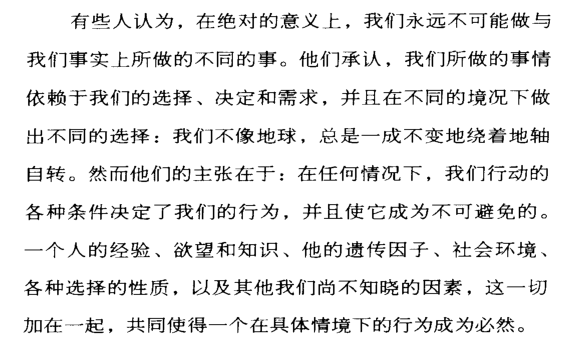
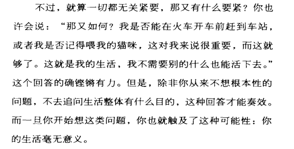

从《你的第一本哲学书》想到的
此书原是一本名为 What Does It All Mean? A Very Short Introduction to Philosophy 的小册子，由美国哲学家 Thomas Nagel 编写。我读的是宝树的中文译本 《你的第一本哲学书》 ，总体来说用词准确，衔接流畅，但有些地方有些粗糙，略感生涩，须对照原文多读几遍。
书籍分为几个小节： 外部世界是否存在、他人的心灵、身心问题、词语的意义、自由意志、对与错、公正、死亡、生活的意义 。由于每个主题都平易近人且值得深思，也多是我自己或深或浅琢磨过的，加之作者表述逻辑清晰，幽默优雅，读起来如坐春风如流水，时有会心一笑或击节叹赏。
对于每一个主题，作者先描述一些许多人自然而然便会提出的疑问，然后给出各种常见的假设和对于假设的反驳，甚至是对假设的反驳的反驳，到最后我们虽然了解了问题的多种可能的答案，但问题依然处于悬而未决的状态，种种追问所面对的基本不再是我们能够论证什么，而是我们选择相信什么，这颇有些可笑和无奈。
作者留下句 也许生命不只没有意义，而且是一出荒诞剧。 ( Life may be not only meaningless but absurd.) 便不再多说。书中谈及的这些可能的答案我都发现或接触过，也自以为能理解七八分，但始终不甚满意，或者更诚实地说，不愿接受。这让我觉得可能一切也不过尔尔，一代代人围着一个个基本问题敲敲打打而至今无果，我又何苦执着呢？
读了一点《大问题：简明哲学导论》，我猛然发现自己大概错了，多年求索却至今才看到正确的方向。哲学的最重要的可能不是提出问题，这本书的中文译名也不是没有道理，在这些疑问和假设的背后是一个个庞大的理论体系，等待我们的深入探索。不停追问是本能，阅读理解别人的答案也不难，困难在于有所相信，并能够 **尽我所能去有力地优雅地有风格地明确表达和论证 ** 我所相信的一切。
表达对做哲学至关重要，表达不是为了让别人认识我，是为了让我认识我自己。为什么只有表达能做到，因为我是怎样的与我想象中的自己是有偏差的，与我如何表达自己也是有偏差的，但后者偏差更小。实在的我存在于实在的世界，我如何表达自己基本上就决定了我是怎样的。与其说我通过表达自己来认识自己，不如说我通过表达自己来塑造自己，实现自己，定义自己。更直接地，我就是我所表达的一切。
更激进一点，如果我不表达，那么我就不存在。如果农夫不再耕种，作家不再写作，母亲不再孕育，世上就不再有农夫、作家或母亲。厨师要下厨，司机要开车，工人要搬砖，画家要作画，诗人要写诗，这一切不能在想象中完成。我们都必须靠所作所为成为自己，而也只有成为了自己，认识自己才成为一种可能。
我终其一生，大概不过是为了做好这一件事，认识我自己。虽然建立自己的哲学未必是我所能胜任的，但从各伟大人物的哲学世界中借些理论，拾些牙慧来过好自己的生活却是可能的。我选择我所相信的，并在表达和论证中确信，从而停下无止境、无答案、无意义的追问，摆脱模棱两可的颓唐秉性和进退两难的思维困局，进而得到宁静，享受当下。上一篇博客里我写了几行表达哲学自杀的代码，现在想来是不对的。此刻我想这样说，哲学不死，自杀无用，从大哉问的深渊中出来也许只是做哲学路上的第一个里程碑。
（后来发现上面悟到的表达和认识的关系颇有些阳明心学中所谓知行合一的意思😮）
下面谈谈这本书的主要议题。
外部世界是否存在
既然人通过感官体验外部世界，人和外部世界之间就隔着一个感官，那么人如何确定外部世界的存在，又如何可能认识外部世界？
这里面最本质的问题在于我们能在多大程度上相信自己的感官。举个简单的例子，我们看到的电影实际上由每秒超过24张的图片组成，而我们的眼睛是意识不到这点的。我们了解了这个现象，便觉得稀松平常，但还有多少是我们所不了解的呢？从眼睛到五官，再到大脑本身，推而广之，细思恐极。每当我们以为找到可依赖的证据来表明客观世界的存在，我们都会发现这证据本身依然依赖于感官，于是我们陷入自我中心困境(Egocentric Predicament)。外部世界如何存在，甚至是否存在，和我们所感知到的，在多大程度上是一致的呢？可能大相径庭，还可能背道而驰。
有些人认为除了自己的精神外没有任何东西存在，我们称之为唯我论(Solipsism)。
有些人对客观世界和客观真理是否存在、能否认识表示怀疑，我们称之为怀疑论(Skepticism)或不可知论。
有些人认为既然我们始终生活在经由感官去认识的世界里，那么这个世界对我们而言就是毋庸置疑的真实。就像如果一场梦无法醒来，那这梦和真实概念就要重新审视，这场梦就是梦里人全部的真实。这种观点我们称之为验证论(Verificationism)。
纯粹的唯我论者或怀疑论者没有出路，必须有一些验证论的心思才可能正常地生活下去。既然我们关于外部世界存在的信念是发自本能而坚定有力的，我们就应当顺从这种本能，至少相信生活中一部分事理的理所当然。也只有这样，更深的追问才有可能发生。
他人的心灵
除了问我所感受到的是真的吗，我们还会问我所感受到的和其他人所感受到的是一样的吗。人和人的交流依赖概念，人对世界的认识依赖感知，不同人建立起的概念和感知的对应关系却未必是一致的。我们都称为红色的东西可能在不同人眼中是完全不一样的感受，这个逻辑是自洽的，不能证否的，但我觉得对生活没有太大影响，可能只有高度智慧而高度敏感的人才会感到苦恼吧，
身心问题
意识依附于大脑的物理活动，还是就是物理活动本身？别人能打开、观察、测量我的大脑，但无法捕捉我的感受。那么我的感受究竟存在于何处？
有些人认为人由复杂的生理有机体加上一个完全精神性的灵魂，我们称之为二元论(Dualism)；
有些人认为精神就是大脑的生理状态，我们称之为物理主义(Physicalism)或唯物主义(Materialism)；
也有一种两面论(Dual Aspect Theory)，大概说的是有一种大脑状态，对外表现为物质，对内呈现为感受，我不太能理解。
默认接受验证论后我们很自然地承认物质的实在性，但对于精神的实在性仍然存疑。自然科学在研究物质实在的基础上走了很远，但仍有许多东西无法解释，也许将来会需要借由神秘的心灵实在来认识。
词语的意义
我们需要一些直接能感受到意义的词来作为词语解释的基础，否则无论试图解释什么概念，都必然陷入无穷的循环定义。提问者只要对定义中的概念不断问是什么，回答者终将崩溃。而这些可以用来解释其他概念的基本概念如何起作用，我们所说所写的一切，又如何可能具有意义？这一切都很神秘，值得探索。
自由意志
你下决定的过程，只不过是事先被决定的结果在你头脑中出现的过程而已。
看到这样一句话，不夸张地说，有些不寒而栗。
有些人怀疑人的主观能动性，车不会自己开，同样的，人也需要被某些东西驱动（可能是一时情境下的诸多复杂因素的合成），人们常常以为这些驱动我们的东西是自己可以控制的，实际上，可能并非如此。
有些人有一套称为决定论(Determinism) 的完美说辞：

一切行为在当时情境下都是必然，可追溯前因，而前因也有其前因，层层叠叠，至于无穷，不可总结，不可分析，也不可预料。人的一切行为被周围环境和心理条件所决定，人是因果律的傀儡，并没有自由选择的可能。既然选择不是自由的，那么责任便无从谈起。我走在路上，被一个石头绊倒，和被一个人故意伸出腿绊倒，我应该有同样的心情。我知道抱怨石头没有用，那么我就应该知道抱怨人也没有用。决定论同时导致是非对错的模糊，一切无可褒贬，善无需嘉奖，恶亦无可指摘，人们都不得不，一切都无选择，人的恶行应当被当作自然灾害去对待：）
如果不是这样的呢？如果人有选择，在作出选择前任何一种选择都是可能发生的呢？那么情况就会显得更加怪异。如果人的行为不是和人的愿望、人格、信念有关的话，那么人的行为是在无缘无故地发生？那如果行为是无缘无故地发生，责任更加无从谈起了。
正反都走不通，只能说细思恐极。
对与错
我们如何衡量对错，很多人最开始的想法本质上都是根据规则，违反规则既是错，反之即对。那么规则的对错用什么来衡量呢？
“规则就是规则，是约定俗成的东西，其本身没有对错”这样的观点可说得通，但能够真正接受它的人恐怕不多。因为如果真是这样，就意味着世上没有对错，只有规则，我们只是用对错来简便地称呼一个行为是否符合规则。没有对错这个事实是难以接受的，因为它让人们的道德感显得滑稽，对人性有所亵渎。
如果规则有对错，那么就一定有超乎规则的东西可用于判定对错，是什么呢？一个容易想到的词是道德。我们也许可以用是否合乎道德来考量一个行为的对错。
从多年前开始有意识地审视道德起，我就一直觉得这是个奇怪的东西。它因人而异，在同一个人身上也因时而异，因事而异，它前后矛盾，纠缠不清，尤其在面对复杂的情况时显得边界模糊，十分无力。直到今天，我在这本书中明晰了一个观点：道德不是普遍而客观的，道德的基础是我们对他人的关心。关心他人的感受，关心他人对我们的看法使我们具有道德。一个人对他人有多少关心，他就有多少的道德感和对自我的道德要求。如果一个人完全不在意自身之外的人事物理，那么他就没有道德，对他而言，事无对错，天地宽广。而一个无所相信，无所关怀的人极大可能无恶不作，所以社会需要通过家庭教育、社区教育、校园教育来维持其成员的道德感水平，通过法律来提高作恶成本。
书中还提到为道德辩护的难点在于我们的行为有太多的动机。这不难理解，因为道德基于关心，而关心有优先级，会变化，纯然主观。对动机的考量本身是困难的，伯夷辞之以为名，仲尼语之以为博 就是对动机的一种诡辩和嘲讽，和对道德的质疑。
突然想到鲁迅先生的 无尽的远方和无数的人们都与我有关 ，我曾感叹这是一种浩瀚的真情。现在我更明白了，这是一种崇高的道德，一种接近圣人的观念。
公正
要决定一个人在竞争社会中的收入和地位，需要自然天赋和家庭背景两方面的运气。因此不平等也就来自于这两方面，一是出于社会经济地位的差异，二是出于社会所需要的自然天赋或者才能上的差异。
对于前者，政府通过税收、再分配和提供社会公共福利来干预经济生活，缩小贫富差距。而对于后者我们难有十分有效的作为，而且更合理的做法也不该是有太多作为。
生活总是这样，总有一些人比另一些人幸运，只有不幸是由一个人对另一个人的错误行为造成的时候，我们才能对此加以干涉（修正）。
死亡
人们相信死后世界如何和人们如何看待身心问题是紧密相关的。
- 一切的证据都显示出：在人死去之前，有意识的生命完全依赖于神经系统的运行。如果我们只相信通常的观察，不涉及宗教教义或通灵术之类的，似乎没有理由相信死后生活的存在。
- 另外一些人可能出于宗教信仰就能够相信死后的生活，而不需要任何证据。我本人并不完全理解这种由信仰激励的观念是如何可能的。但显然有人能够理解，甚至认为这很自然。
死了就没有了的话，也没有什么可怕的，毕竟你也感受不到。一个有趣的思路是，你出生前的世界也没有你，你会因为自己的突然存在而感到害怕吗？显然一般不会，而这两种状态转换实际上是没有太大分别的。
生活的意义
关于意义的思考，一个直接的思路是既然一切关于我的都将从有变无，那么我所做的一切意义何在？
直观上看，这个思路是无解的，哪怕是胡适的 社会不朽论 也没有用，因为社会不朽只有在社会本身有意义的前提下才有意义。（如果想直观感受下，可以看看《三体》中二向箔摊平太阳系的场景。）
希望这个问题有解，就得重新审视意义。意义从哪里来，意义和永恒是怎样的关系，永恒又意味着什么。当我们在讨论意义、目的、价值时，我们指的是什么？
饥则食，渴则饮，困则眠，生活的每个行为也许都可以得到解释，其目的都很清晰。但如果把生活当作一个整体去考量，我是否存在过都是无关紧要的，更别谈我如何存在有什么意义了。
所以，解决无意义只有一种方式，把意义降级为目的。然后我就会发现丰富的目的，远离匮乏的意义😀。
然而，这不会起作用的。就像作者所说：

全书的最后两段感触甚深，贴上来并且自己翻译一下：
Even if life as a whole is meaningless, perhaps that’s nothing to worry about. Perhaps we can recognize it and just go on as before. The trick is to keep your eyes on what’s in front of you, and allow justifications to come to an end inside your life, and inside the lives of others to whom you are connected. If you ever ask yourself the question, “But what’s the point of being alive at all?” – leading the particular life of a student or bartender or whatever you happen to be – you’ll answer “There’s no point. It wouldn’t matter if I didn’t exist at all, or if I didn’t care about anything. But I do. That’s all there is to it.”
Some people find this attitude perfectly satisfying. Others find it depressing, though unavoidable. Part of the problem is that some of us have an incurable tendency to take ourselves seriously. We want to matter to ourselves “from the outside.” If our lives as a whole seem pointless, then a part of us is dissatisfied – the part that is always looking over our shoulders at what we are doing. Many human efforts, particularly those in the service of serious ambitions rather than just comfort and survival, get some of their energy from a sense of importance – a sense that what you are doing is not just important to you, but important in some larger sense: important, period. If we have to give this up, it may threaten to take the wind out of our sails. If life is not real, life is not earnest, and the grave is its goal, perhaps it’s ridiculous to take ourselves so seriously. On the other hand, if we can’t help taking ourselves so seriously, perhaps we just have to put up with being ridiculous. Life may be not only meaningless but absurd.
1 | /* |
结语
回头看，我几乎曾一个人走完书中所有的心路历程，我总以为后面还有东西，但作者说人生无意义，人生很荒唐，然后言尽于此，所以我只是又确认了一遍那种绝望感。也许真的，关心你所关心的一切就好了，除了意义本身。